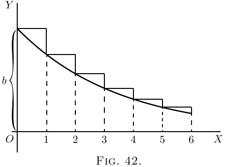

第 14 章(b) 衰减曲线
如果我们将 \(p\) 作为一个适当的分数（小于1），则曲线显然会向下沉降，正如在图42中所示，其中每个连续的纵坐标是前一个的 \(\frac{3}{4}\)。

方程仍然是
但由于 \(p\) 小于1，\(\log_\epsilon p\) 将是一个负数，可以写作 \(-a\)；因此 \(p = \epsilon^{-a}\)，现在我们的曲线方程变为
这个表达式的重要性在于，在独立变量是 时间 的情况下，这个方程表示了许多物理过程的轨迹，这些过程中的某些事物在 逐渐消失。因此，热体的冷却过程（根据牛顿的著名“冷却定律”）可以用以下方程表示：
其中 \(\theta_0\) 是热体与其周围环境温度的初始差值，\(\theta_t\) 是时间 \(t\) 结束时的温度差值，\(a\) 是一个常数——即衰减常数，依赖于物体暴露的表面积、物体的导热系数和发射系数等。
类似的公式，
用于表示一个带电物体的电荷，它最初具有电荷 \(Q_0\)，电荷随着一个衰减常数 \(a\) 渐渐流失；这个常数在此情况下依赖于物体的电容量和泄漏路径的电阻。
施加在柔性弹簧上的振动在一段时间后消失；振动幅度的衰减可以用类似的方式表示。
实际上，在所有衰减速率与正在衰减的量成比例的现象中，\(\epsilon^{-at}\) 是衰减因子。换成我们常用的符号，就是 \(\frac{dy}{dt}\) 在每一时刻都与 \(y\) 的值成比例。我们只需要检查图42中的曲线，就能看到，在它的每一部分，斜率 \(\frac{dy}{dx}\) 与高度 \(y\) 成比例；随着 \(y\) 变小，曲线变得更加平坦。用符号表示： \(y=b\epsilon^{-ax}\) 或者
求导得到
或者用文字描述，曲线的斜率是向下的，并且与 \(y\) 和常数 \(a\) 成比例。
如果我们以以下形式得到方程，也会得到相同的结果：
因为在这种情况下
但是
这给我们
就像之前一样。
时间常数。
在“衰减因子” \(\epsilon^{-at}\) 的表达式中，\(a\) 是另一个量的倒数，称为“时间常数”，我们可以用符号 \(T\) 来表示它。然后，衰减因子可以写为 \(\epsilon^{-\frac{t}{T}}\)；通过设定 \(t = T\)，可以看出 \(T\)（或者 \(\frac{1}{a}\)）的含义是，这段时间是原始量（在前面的例子中为 \(\theta_0\) 或 \(Q_0\)）衰减为其原始值的 \(\frac{1}{\epsilon}\) 部分——即到达 \(0.3678\) 时所需的时间。
在物理学的不同领域中，\(\epsilon^x\) 和 \(\epsilon^{-x}\) 的值经常被用到，而由于它们在数学表中列出得非常少，为了方便起见，这里列出了一些常见的值。
| \(x\) | \(\epsilon^x\) | \(\epsilon^{-x}\) | \(1-\epsilon^{-x}\) |
|---|---|---|---|
| \(0\) | \(1.0000\) | \(1.0000\) | \(0.0000\) |
| \(0.10\) | \(1.1052\) | \(0.9048\) | \(0.0952\) |
| \(0.20\) | \(1.2214\) | \(0.8187\) | \(0.1813\) |
| \(0.50\) | \(1.6487\) | \(0.6065\) | \(0.3935\) |
| \(0.75\) | \(2.1170\) | \(0.4724\) | \(0.5276\) |
| \(0.90\) | \(2.4596\) | \(0.4066\) | \(0.5934\) |
| \(1.00\) | \(2.7183\) | \(0.3679\) | \(0.6321\) |
| \(1.10\) | \(3.0042\) | \(0.3329\) | \(0.6671\) |
| \(1.20\) | \(3.3201\) | \(0.3012\) | \(0.6988\) |
| \(1.25\) | \(3.4903\) | \(0.2865\) | \(0.7135\) |
| \(1.50\) | \(4.4817\) | \(0.2231\) | \(0.7769\) |
| \(1.75\) | \(5.755\) | \(0.1738\) | \(0.8262\) |
| \(2.00\) | \(7.389\) | \(0.1353\) | \(0.8647\) |
| \(2.50\) | \(12.182\) | \(0.0821\) | \(0.9179\) |
| \(3.00\) | \(20.086\) | \(0.0498\) | \(0.9502\) |
| \(3.50\) | \(33.115\) | \(0.0302\) | \(0.9698\) |
| \(4.00\) | \(54.598\) | \(0.0183\) | \(0.9817\) |
| \(4.50\) | \(90.017\) | \(0.0111\) | \(0.9889\) |
| \(5.00\) | \(148.41\) | \(0.0067\) | \(0.9933\) |
| \(5.50\) | \(244.69\) | \(0.0041\) | \(0.9959\) |
| \(6.00\) | \(403.43\) | \(0.00248\) | \(0.99752\) |
| \(7.50\) | \(1808.04\) | \(0.00055\) | \(0.99947\) |
| \(10.00\) | \(22026.5\) | \(0.000045\) | \(0.999955\) |
举例说明。例如，假设有一个热体在冷却，实验开始时（即当 \(t = 0\) 时）它比周围物体的温度高 \(72°\)，且它的冷却时间常数是 \(20\) 分钟（即，它的温度过剩将需要 \(20\) 分钟才能降至原始温度的 \(\dfrac{1}{\epsilon}\) 部分），那么我们可以计算它在任何给定时间 \(t\) 时温度降到的数值。例如，假设 \(t\) 为 \(60\) 分钟。那么 \(\dfrac{t}{T} = 60 ÷ 20 = 3\)，我们需要找到 \(\epsilon^{-3}\) 的值，然后将原始的 \(72°\) 温度乘以这个值。表中显示 \(\epsilon^{-3}\) 为 \(0.0498\)。因此，在 \(60\) 分钟结束时，温度过剩将降至 \(72° × 0.0498 = 3.586°\)。
更多例子
(1) 一个导体中电流的强度，假设在施加电动势后经过 \(t\) 秒，电流强度可由以下表达式给出：
其中时间常数为 \(\dfrac{L}{R}\)。
如果 \(E = 10\)，\(R = 1\)，\(L = 0.01\)，那么当 \(t\) 非常大时，项 \(\epsilon^{-\frac{Rt}{L}}\) 会趋近于 1，这时 \(C = \dfrac{E}{R} = 10\)；同时，
该电流在任何时刻的值可以写成：
其时间常数为 \(0.01\)。这意味着，变量项需要 \(0.01\) 秒才能衰减至初值的 \(\dfrac{1}{\epsilon} = 0.3678\)，即从初始值 \(10\epsilon^{-\frac{0}{0.01}} = 10\) 衰减至 \(10 \times 0.3678 = 3.678\)。
为了求得当 \(t = 0.001\) 秒时的电流强度，设 \(\dfrac{t}{T} = 0.1\)，从表中查得 \(\epsilon^{-0.1} = 0.9048\)。
因此，经过 \(0.001\) 秒后，变量项为 \(0.9048 \times 10 = 9.048\)，实际电流为 \(10 - 9.048 = 0.952\)。
同样，经过 \(0.1\) 秒后，
变量项为 \(10 \times 0.000045 = 0.00045\)，实际电流为 \(9.9995\)。
(2) 通过一定厚度 \(l\) 厘米的透明介质传播的光束的强度 \(I\) 为 \(I = I_0 \epsilon^{-Kl}\)，其中 \(I_0\) 是光束的初始强度，\(K\) 是“吸收常数”。
这个常数通常通过实验来确定。例如，如果实验表明，光束在穿过 \(10\) 厘米某种透明介质时，强度减少了 18%，这意味着 \(82 = 100 \times \epsilon^{-K \times 10}\) 或 \(\epsilon^{-10K} = 0.82\)，从表中可以看到，\(10K = 0.20\) 非常接近；因此 \(K = 0.02\)。
要找出使光强减半的厚度 \(l\)，我们需要求解满足以下等式的 \(l\)：\(50 = 100 × \epsilon^{-0.02l}\) 或者 \(0.5 = \epsilon^{-0.02l}\)。通过将此方程转换为对数形式：
可以得到：
(3) 一种放射性物质在未发生转化时的数量 \(Q\) 与物质的初始数量 \(Q_0\) 之间的关系为 \(Q = Q_0 \epsilon^{-\lambda t}\)，其中 \(\lambda\) 是常数，\(t\) 是自转化开始以来的时间（单位：秒）。
对于“铀 \(A\)”，如果时间以秒为单位，则实验表明 \(\lambda = 3.85 \times 10^{-3}\)。求使物质转化一半所需的时间（这个时间称为物质的“平均寿命”）。
我们有：\(0.5 = \epsilon^{-0.00385t}\)。